Source image, saved anatomical outlines and scale endpoints. Unfinished fields are NA.
Contours refined 2026-10-15 after enlarged source review. Original outlines archived; source-toggle and prior-outline comparison in review/line_refinement.html. Scientific interpretation remains provisional.
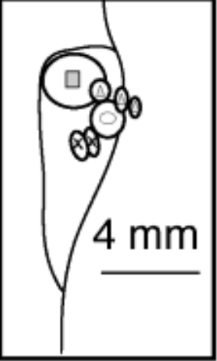
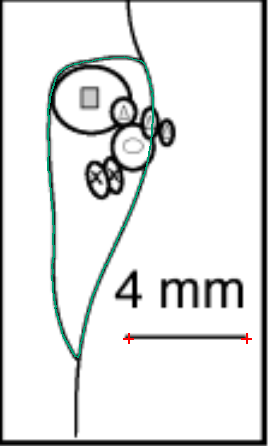
| Field | mm² | % neocortex | Status |
|---|---|---|---|
| DM | 23.697 | NA | provisional; anatomical review required |
| V2 | NA | NA | not_measurable |
DM-symbol recheck 2026-10-31 supersedes older blanket exclusions and symbol-following contours; see review/dm_recheck_2026-10-31/index.html.
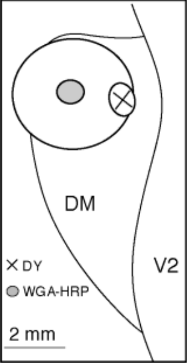
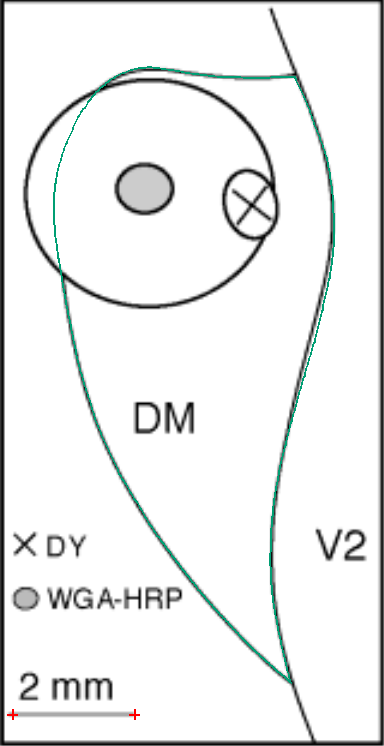
| Field | mm² | % neocortex | Status |
|---|---|---|---|
| DM estimated envelope | 30.296 | NA | inferred_boundary_estimate_not_observed |
| V2 | NA | NA | not_measurable |
| DM observed complete boundary | NA | NA | not_measurable |
DM-symbol recheck 2026-10-31 supersedes older blanket exclusions and symbol-following contours; see review/dm_recheck_2026-10-31/index.html.
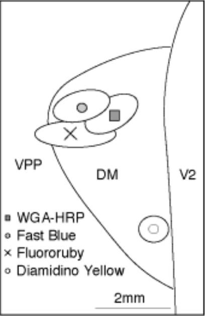
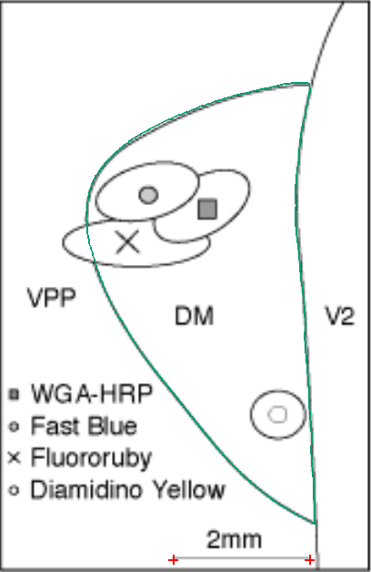
| Field | mm² | % neocortex | Status |
|---|---|---|---|
| DM | 13.910 | NA | provisional; anatomical review required |
| V2 | NA | NA | not_measurable |
| VPP | NA | NA | not_measurable |
DM-symbol recheck 2026-10-31 supersedes older blanket exclusions and symbol-following contours; see review/dm_recheck_2026-10-31/index.html.
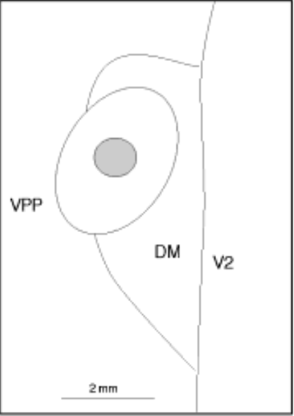
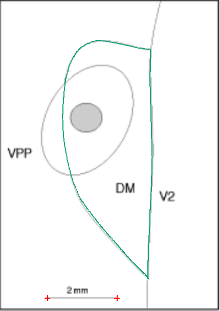
| Field | mm² | % neocortex | Status |
|---|---|---|---|
| DM estimated envelope | 13.067 | NA | inferred_boundary_estimate_not_observed |
| V2 | NA | NA | not_measurable |
| VPP | NA | NA | not_measurable |
| DM observed complete boundary | NA | NA | not_measurable |
DM-symbol recheck 2026-10-31 supersedes older blanket exclusions and symbol-following contours; see review/dm_recheck_2026-10-31/index.html.
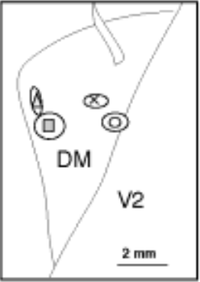
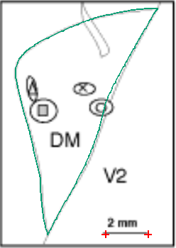
| Field | mm² | % neocortex | Status |
|---|---|---|---|
| DM | 31.771 | NA | provisional; anatomical review required |
| V2 | NA | NA | not_measurable |
Contours refined 2026-10-15 after enlarged source review. Original outlines archived; source-toggle and prior-outline comparison in review/line_refinement.html. Scientific interpretation remains provisional.
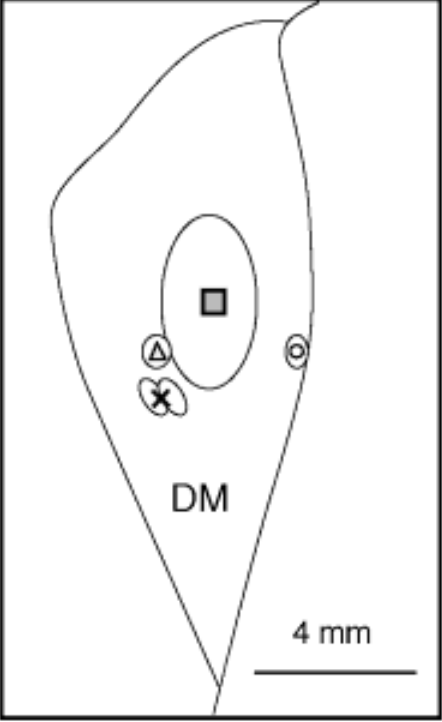
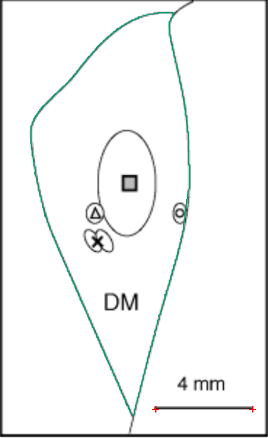
| Field | mm² | % neocortex | Status |
|---|---|---|---|
| DM | 66.415 | NA | provisional; anatomical review required |
| V2 | NA | NA | not_measurable |
Contours refined 2026-10-15 after enlarged source review. Original outlines archived; source-toggle and prior-outline comparison in review/line_refinement.html. Scientific interpretation remains provisional.
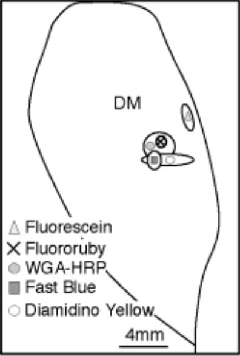
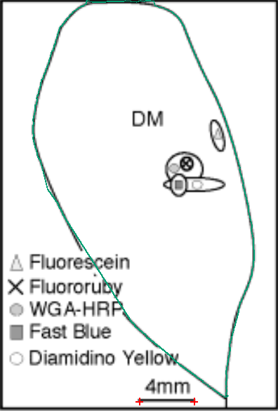
| Field | mm² | % neocortex | Status |
|---|---|---|---|
| DM visible fragment | 298.995 | NA | provisional; anatomical review required |
| DM | NA | NA | not_measurable |
Contours refined 2026-10-15 after enlarged source review. Original outlines archived; source-toggle and prior-outline comparison in review/line_refinement.html. Scientific interpretation remains provisional.
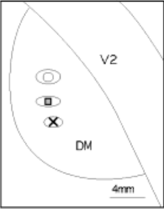
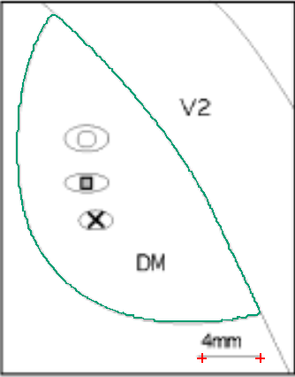
| Field | mm² | % neocortex | Status |
|---|---|---|---|
| DM | 201.797 | NA | provisional; anatomical review required |
| V2 | NA | NA | not_measurable |
Refined contours: enlarged source toggles and before/after comparison
Beck_Kaas_1998: 14 numbered figures assessed; 8 field/fragment measurements. New tracings are provisional. No certified complete-neocortex denominator is available.
Figure inventory · Methods and limits · Measurements · Complete-field absolute-area summary
Noneligible source figure. Projected brain/sulcus localization diagrams; not metric flattened specimen envelopes.
PDF page2; review preview only.
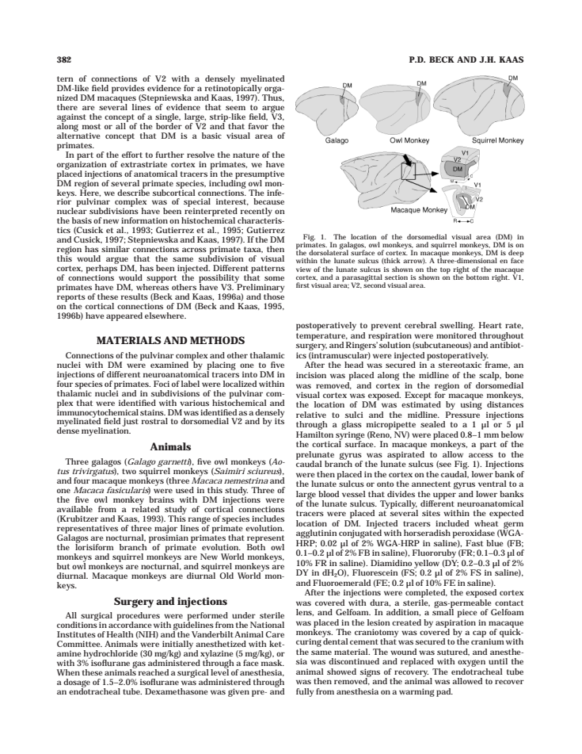
Noneligible source figure. Pulvinar coronal section architecture: cross-sectional nuclear area is not cortical surface area.
PDF page4; review preview only.
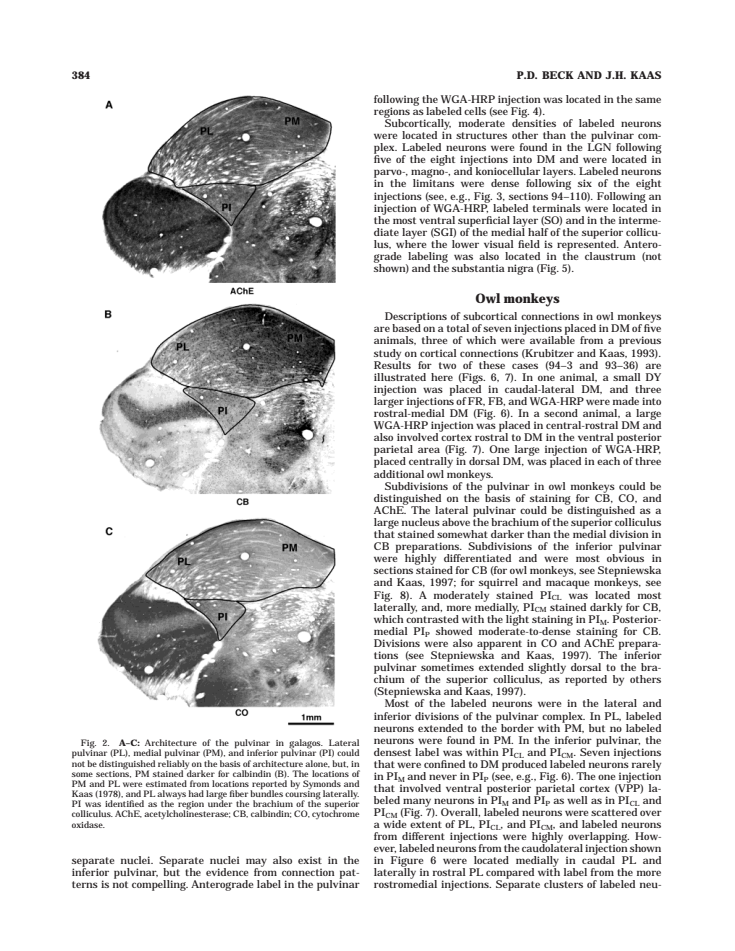
Cortical DM injection-site inset; surrounding numbered panels are subcortical cross-sections. 31 October DM-symbol recheck: complete DM envelope saved. Tracer symbols/injection ovals are not areal borders. Other panels are thalamic sections, not cortical surface maps. V2/VPP complete outer boundaries are not supplied.
PDF page5; review preview only.
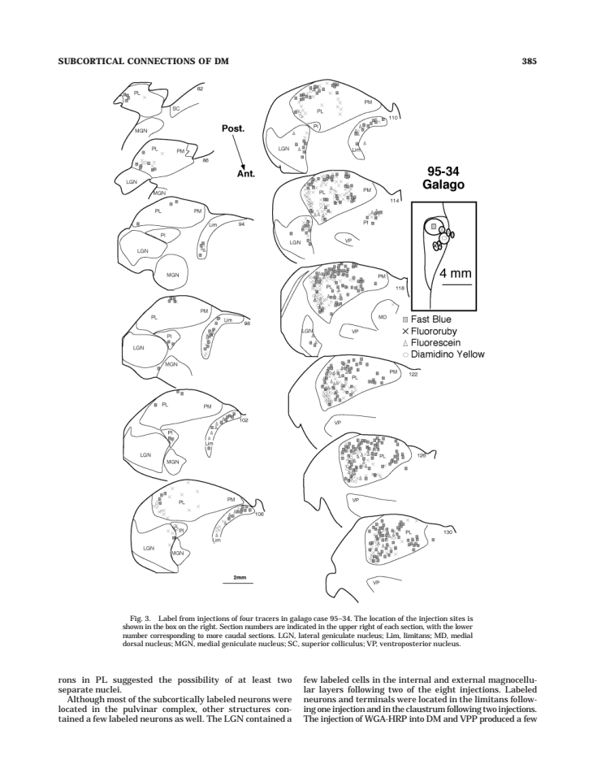
Cortical DM injection-site inset; surrounding numbered panels are subcortical cross-sections. 31 October DM-symbol recheck: approximate_complete DM envelope saved. Long injection-obscured border is explicitly inferred and excluded from observed complete-field analysis. Tracer symbols/injection ovals are not areal borders. Other panels are thalamic sections, not cortical surface maps. V2/VPP complete outer boundaries are not supplied.
PDF page6; review preview only.
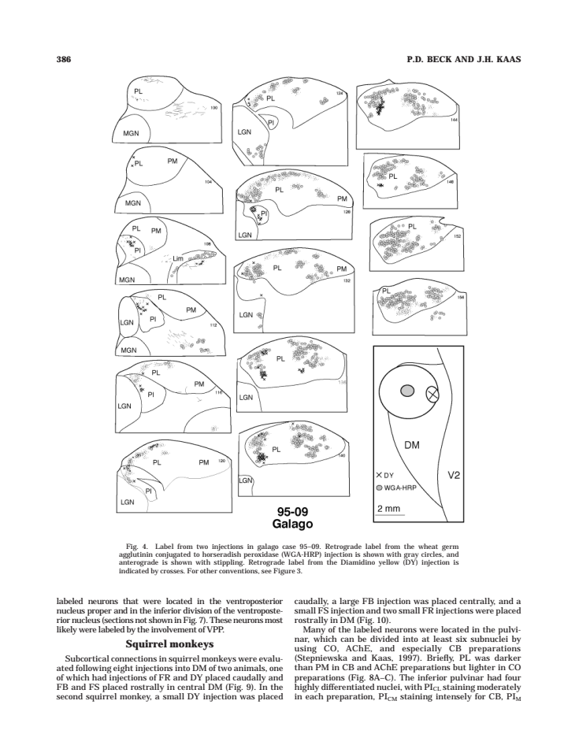
Noneligible source figure. Subcortical sections of SC/SN/pons; no cortical surface field.
PDF page7; review preview only.
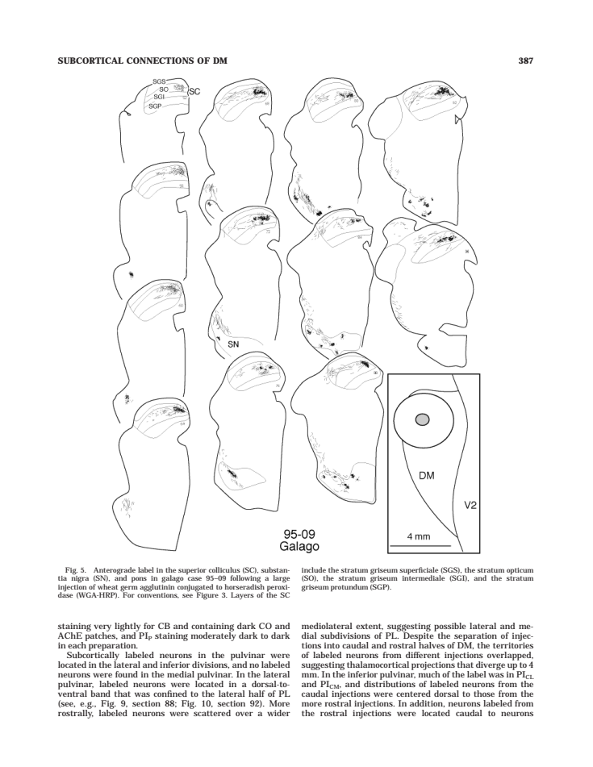
Cortical DM injection-site inset; surrounding numbered panels are subcortical cross-sections. 31 October DM-symbol recheck: complete DM envelope saved. Tracer symbols/injection ovals are not areal borders. Other panels are thalamic sections, not cortical surface maps. V2/VPP complete outer boundaries are not supplied.
PDF page8; review preview only.
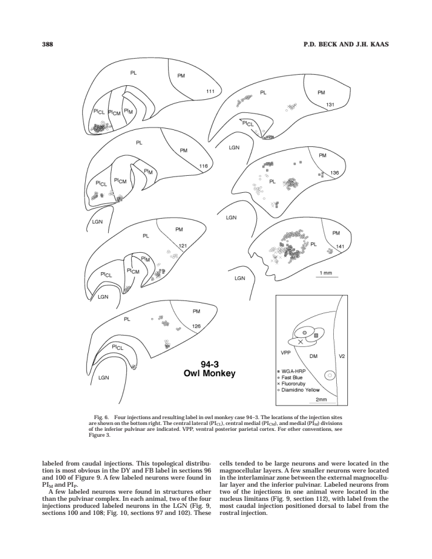
Cortical DM injection-site inset; surrounding numbered panels are subcortical cross-sections. 31 October DM-symbol recheck: approximate_complete DM envelope saved. Long injection-obscured border is explicitly inferred and excluded from observed complete-field analysis. Tracer symbols/injection ovals are not areal borders. Other panels are thalamic sections, not cortical surface maps. V2/VPP complete outer boundaries are not supplied.
PDF page9; review preview only.
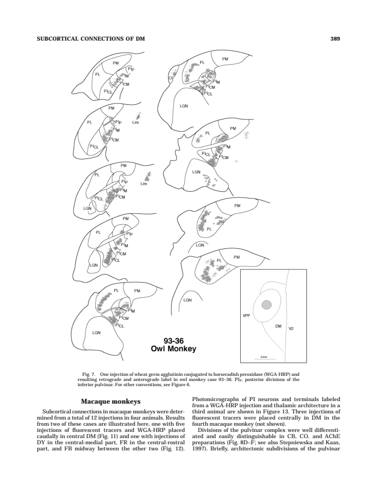
Noneligible source figure. Pulvinar cross-sectional histology, not cortical field surface geometry.
PDF page10; review preview only.
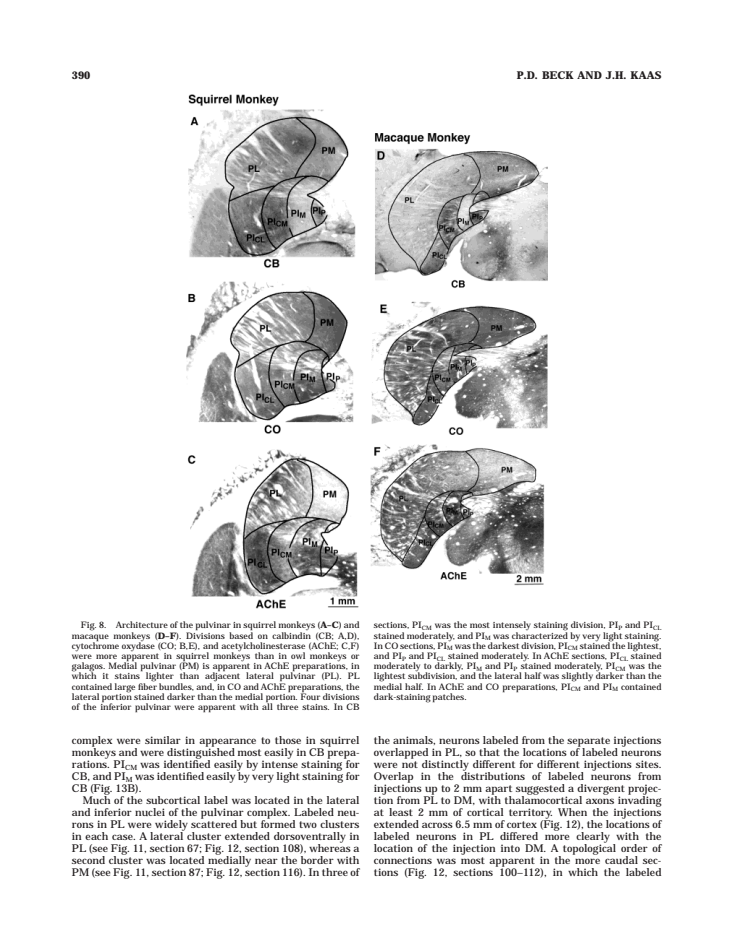
Cortical DM injection-site inset; surrounding numbered panels are subcortical cross-sections. 31 October DM-symbol recheck: complete DM envelope saved. Tracer symbols/injection ovals are not areal borders. Other panels are thalamic sections, not cortical surface maps. V2/VPP complete outer boundaries are not supplied.
PDF page11; review preview only.
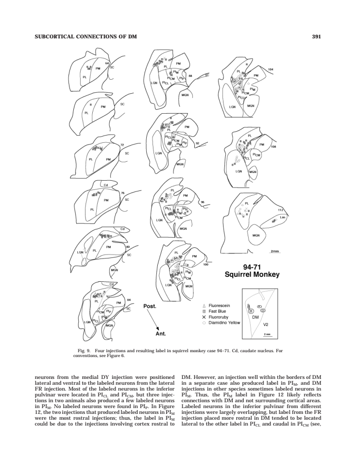
Cortical DM injection-site inset; surrounding numbered panels are subcortical cross-sections. 31 October DM-symbol recheck: complete DM envelope saved. Tracer symbols/injection ovals are not areal borders. Other panels are thalamic sections, not cortical surface maps. V2/VPP complete outer boundaries are not supplied.
PDF page12; review preview only.
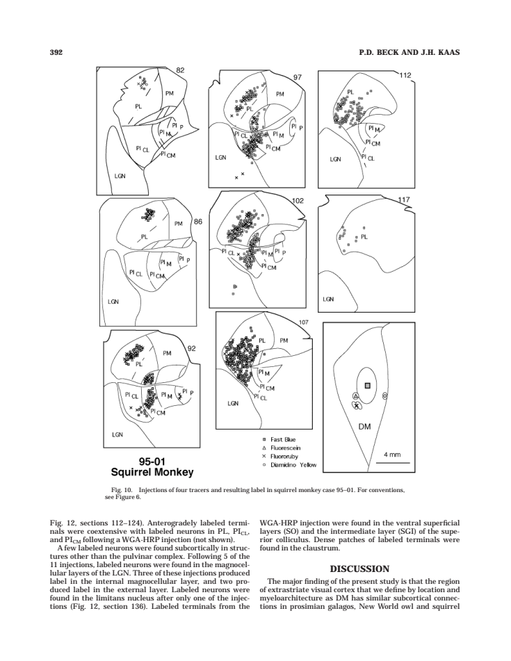
Cortical DM injection-site inset; surrounding numbered panels are subcortical cross-sections. 31 October DM-symbol recheck: partial DM envelope saved. Tracer symbols/injection ovals are not areal borders. Other panels are thalamic sections, not cortical surface maps. V2/VPP complete outer boundaries are not supplied.
PDF page13; review preview only.
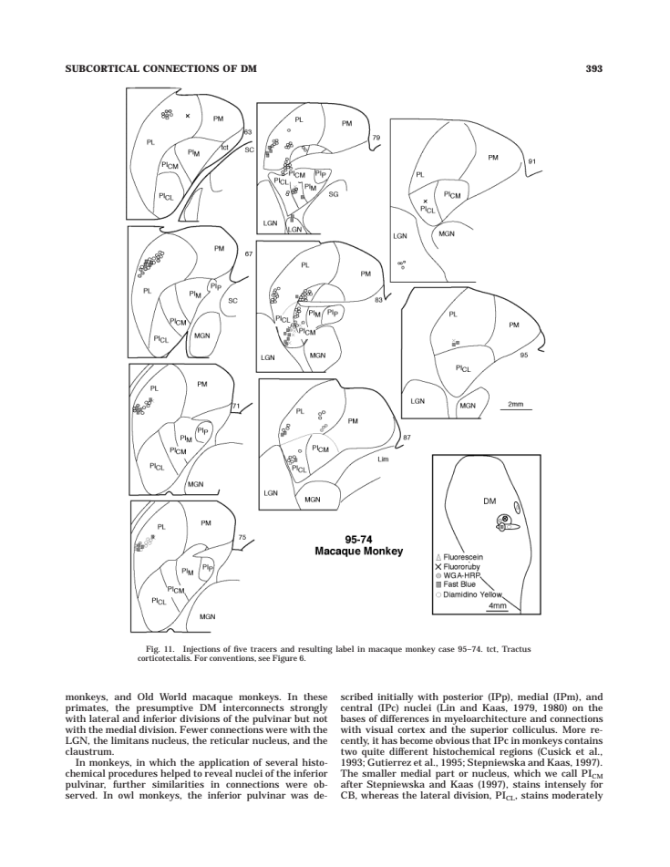
Cortical DM injection-site inset; surrounding numbered panels are subcortical cross-sections. 31 October DM-symbol recheck: complete DM envelope saved. Tracer symbols/injection ovals are not areal borders. Other panels are thalamic sections, not cortical surface maps. V2/VPP complete outer boundaries are not supplied.
PDF page14; review preview only.
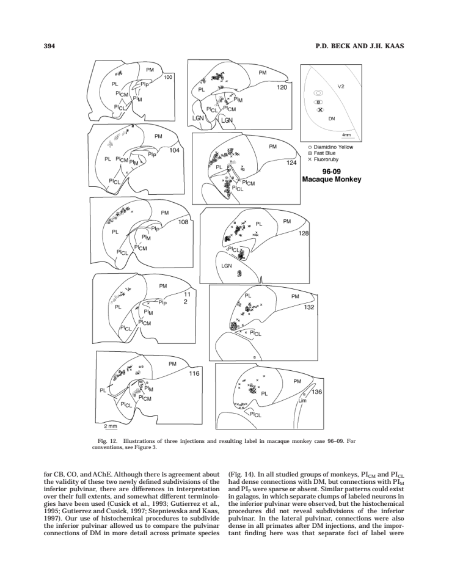
Noneligible source figure. Macaque thalamic histology and tracer detail, not cortical surface area.
PDF page15; review preview only.
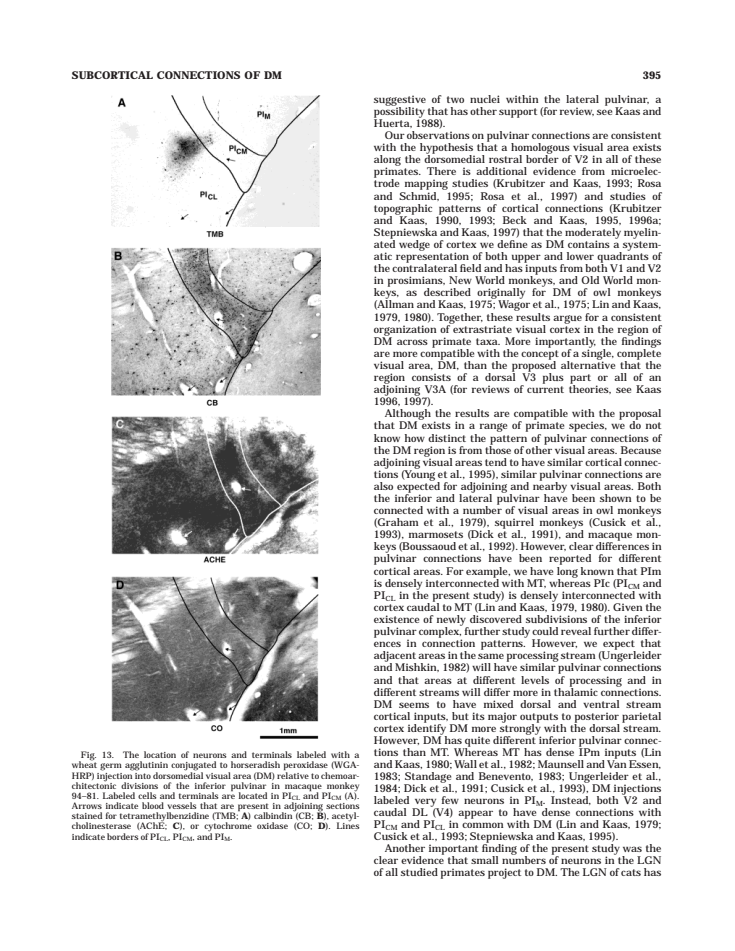
Noneligible source figure. Summary connection diagram without new specimen geometry.
PDF page16; review preview only.
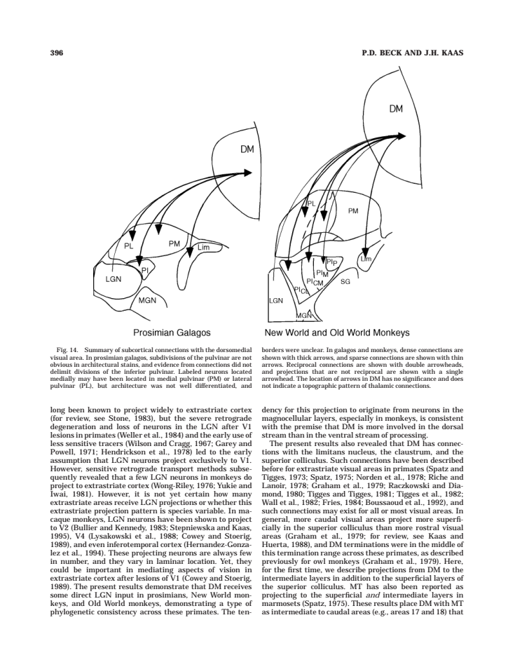
Latest DM source/overlay review: tracer symbols, inferred segments and all eight insets